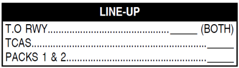

- Brake fans should not be used for takeoff (FOD prevention).
- Without previous fans usage, MAX BRK TEMP for takeoff is 300ºC.
- With previous fans usage, MAX BRK TEMP for takeoff is 150ºC.
Turn on fans if amber arc displayed on WHEEL page, above BRK TEMP. Turn them off when temperature goes below 150ºC. Else, delay takeoff.
